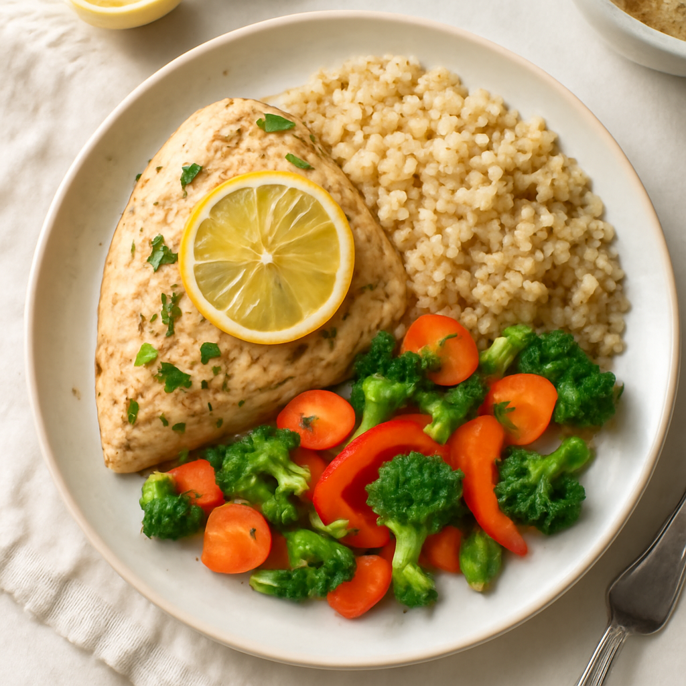

Sunday — Oven-Baked Lemon Herb Chicken with Quinoa & Veggies

Cook Time: 40 minutes
Method: Oven
chickenquinoaovenhealthy
Ingredients for 6
- 6 organic chicken thighs
- 1 cup organic quinoa
- 2 cups vegetable broth
- 1 zucchini, diced
- 1 red bell pepper, diced
- 1 cup cherry tomatoes
- 2 tablespoons olive oil
- 1 lemon, juiced
- 1 teaspoon dried oregano
- 1 teaspoon garlic powder
- Salt, to taste
- Pepper, to taste
Instructions
- Preheat oven to 400°F (200°C).
- In a baking dish, combine chicken, olive oil, lemon juice, oregano, garlic powder, salt, and pepper.
- Add diced veggies around chicken, then bake for 30 minutes.
- While chicken is baking, rinse quinoa and cook with vegetable broth according to package.
- Serve chicken with quinoa and roasted vegetables.
Toddler Notes
- Shred chicken for toddlers, ensure all veggies are soft and cut into small pieces to avoid choking.
← Back to weekly plan